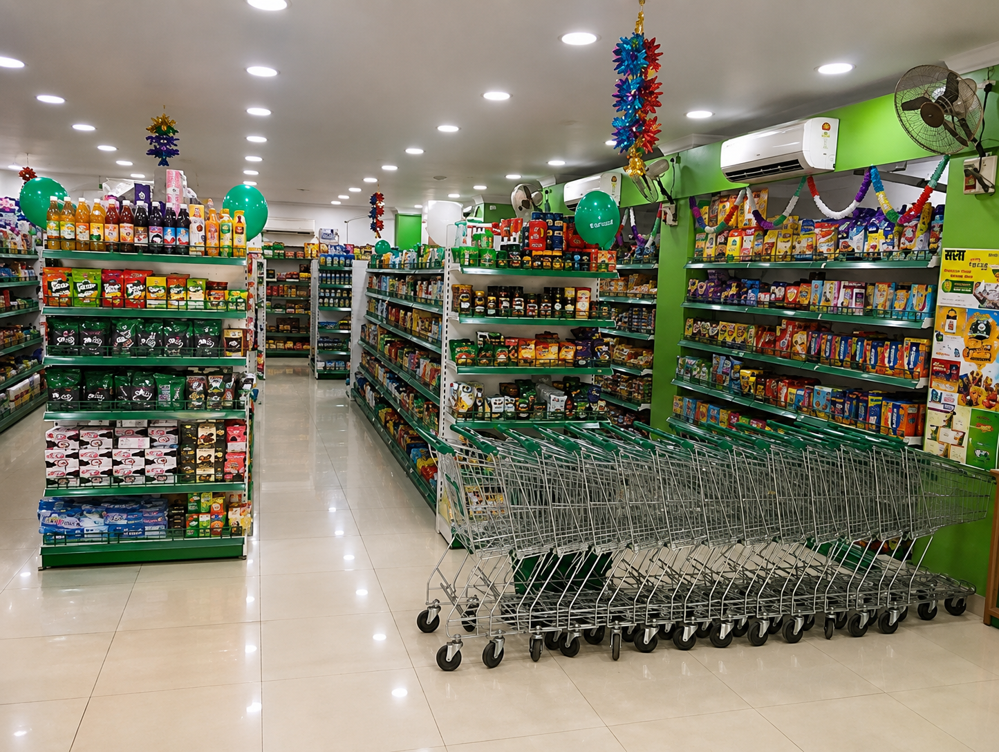
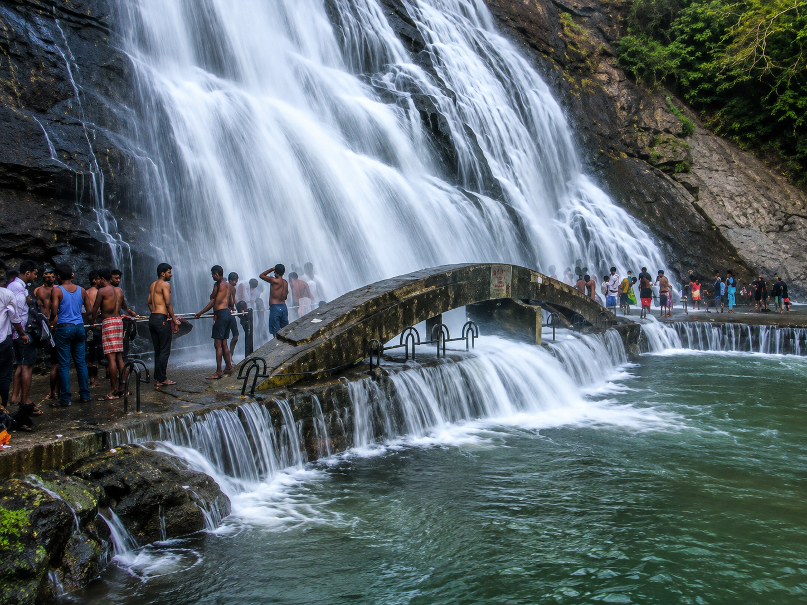

Explore Tamil Nadu's Heritage

Sankaranarayanar Temple
5 Mins WalkBuilt in the 11th century, this iconic Hindu temple is unique for its primary deity, Sankaranarayanar, which represents the unified form of Lord Shiva (Sankaran) and Lord Vishnu (Narayanan). Famous for its towering, colorful gopuram and the healing soil (Puthi Man) within the temple complex, it is a spiritual haven for lakhs of pilgrims yearly.
- Famous deity representing Shiva & Vishnu unity
- Spiritual sand with believed curative properties
- Stunning historical architecture and stone carvings

Local Handlooms & Shopping
2 Mins WalkSankaranKovil is highly renowned across southern Tamil Nadu for its thriving textile industries, specializing in traditional handloom cotton sarees, fine linens, and royal silk fabrics. Explore the vibrant local bazaars surrounding the hotel to buy pure cotton items directly from local weavers at wholesale rates.
- Traditional cotton handloom weaving hubs
- Pure silk fabrics and bridal collections
- Local brassware and temple souvenir shops

Courtallam Falls & Regional Gems
45 Mins DriveMake the most of your stay by exploring neighboring tourist highlights in Tenkasi district. Take a refreshing, therapeutic shower at the famous Courtallam Waterfalls (the Spa of South India) or visit the stunning rock-cut cave temples of Kalugumalai, representing ancient Jain and Pandya heritage.
- Courtallam Waterfalls - Therapeutic natural spa
- Kalugumalai Rock-Cut Temples - Ancient rock carvings
- Tenkasi Kasi Viswanathar Temple - Historic tower